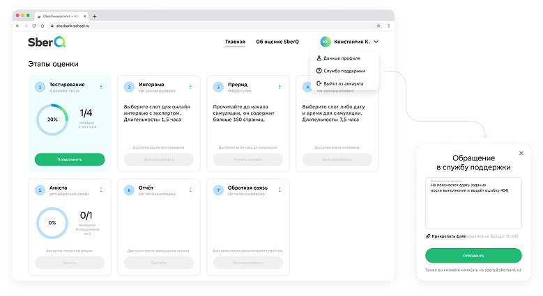
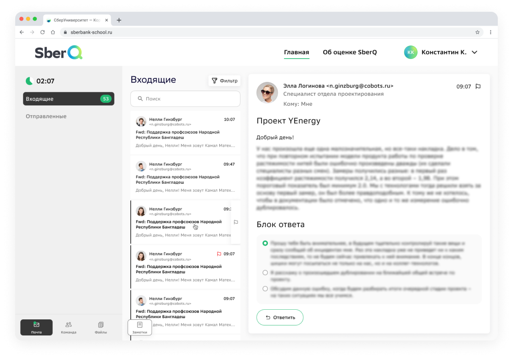
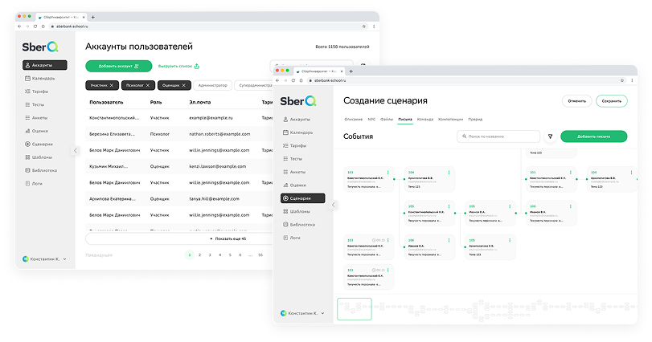
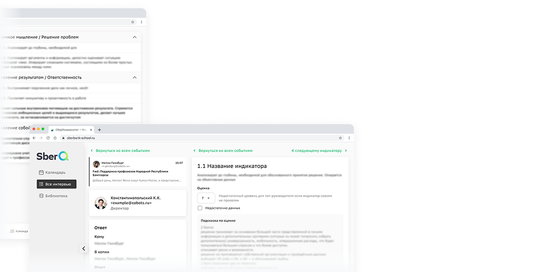

Обзор проекта
SberQ — это HR-платформа для управления персоналом, разработанная для крупных организаций. Проект требовал создания интуитивного интерфейса для HR-процессов, управления сотрудниками, оценки производительности и автоматизации административных задач.
Вызов
Нужно было объединить сложный процесс (психологические тесты, интервью, симулятор рабочего дня, сбор обратной связи) в единый понятный интерфейс, который снизит когнитивную нагрузку на всех участников и сделает оценку прозрачной.
Визуализация

Единая домашняя страница
Упростили прохождение оценки, объединив все этапы на одной платформе. Теперь можно обратиться в поддержку прямо с главной страницы, без посредников.

Симулятор рабочего дня CEO
Сделали оценку более реалистичной — теперь кандидаты проходят симуляцию рабочего дня с письмами, звонками и авралами, чтобы показать, как они справятся в реальной работе.

Админ-панель
Убрали необходимость править код для изменений — теперь всё настраивается прямо в интерфейсе: роли, материалы, тарифы и сценарии. Это снизило нагрузку на IT-отдел на 60%.

Интерфейс оценщика
Объединили календарь, оценку и библиотеку в одном месте. Теперь можно планировать сессии, оценивать по чек-листам и открывать материалы без переключения между разделами. Это убрало лишние действия и сделало оценку более объективной.
Моя роль и процесс проектирования
Анализ исследований
На старте команда Сбера передала нам все материалы по исследованиям:
- Расшифровки 10+ глубинных интервью с кандидатами и оценщиками.
- Персоны пользователей.
- Value Proposition Canvas.
- Сравнение с конкурентами.
- Текущий и целевой CJM.
- Ролевая модель с описанием задач каждой группы.
Хочу поблагодарить коллег из Сбера за такую глубокую проработку исследований — это позволило мне как дизайнеру сразу погрузиться в контекст и принимать решения, опираясь не на догадки, а на реальные боли пользователей.
Формирование гипотез и проектных задач
На основе анализа CJM и ролевой модели я выделил ключевые пользовательские сценарии и сформулировал гипотезы, которые предстояло проверить:
- Для кандидата: «Если на главном экране визуализировать все этапы оценки с понятными статусами и сроками, пользователь перестанет теряться и реже будет обращаться в поддержку».
- Для оценщика: «Если объединить календарь, профили кандидатов, чек-листы и материалы для оценки в единый рабочий стол, асессор сможет проводить оценку быстрее и без переключения контекста».
- Для администратора: «Если предоставить интерактивную аналитику с возможностью сравнивать кандидатов и команды, HR будет принимать более обоснованные решения».
Проектирование
Первым делом я пересмотрел структуру разделов, отталкиваясь от ролевой модели. Вместо единого для всех меню мы спроектировали персонализированную навигацию:
- Кандидат видит только свои этапы оценки и личный кабинет.
- Оценщик — расписание, профили кандидатов, инструменты оценки.
- Администратор — дашборды, отчёты, настройки.
Это сразу снизило информационный шум, о котором говорили в интервью.
Тестирование
Мы провели юзабилити-тестирование прототипов на 5 респондентах из каждой роли. Сессии проходили онлайн с демонстрацией экрана. Основные замечания касались:
- Расположения кнопок в симуляторе (перенесли панель управления ближе к центру).
- Неочевидности некоторых иконок (заменили на текстовые подписи).
- Желания видеть больше настроек в дашборде администратора (добавили возможность скрывать некоторые графики).
После внесения правок прототипы были утверждены и переданы в разработку.
Технические детали
Для построения интерфейса использовалась дизайн-система СберУниверситета, а если в системе отсутствовал нужный компонент, я сам создавал, сохраняя визуальное постоянство по всей платформе.
Особое внимание уделили адаптивности — хотя платформа десктопная, некоторые экраны (например, чтение отчётов) должны комфортно отображаться на планшетах и ноутбуках с небольшим экраном. Основная версия делалась на ширину 1440 пикселей, держа в голове версию 900–1200 пикселей.
Проработали состояния загрузки, ошибок, пустые состояния — чтобы интерфейс оставался дружелюбным в любой ситуации.
Решение
- Кандидат видит единый дашборд с семью этапами, их статусами (пройдено/активно/ожидает) и примерным временем. Никакой потерянности.
- Оценщик в своём интерфейсе получает доступ к расписанию, профилям кандидатов, чек-листам оценки и материалам — всё в одном окне без переключений.
- Администратор видит аналитические дашборды с агрегированными данными по кандидатам, сравнением компетенций, бенчмаркингом — вместо папок с PDF.
Планы на будущее
Я передал проект другому дизайнеру, чтобы участвовать в запусках новых продуктов, но периодически слежу за планами и развитием проекта. Планы проекта на будущее:
- Автоматическое формирование отчётов прямо в интерфейсе (без скачивания).
- Интеграция ИИ для анализа ответов в симуляторе.
- Новые виды тестирования с соответствующими интерфейсами.